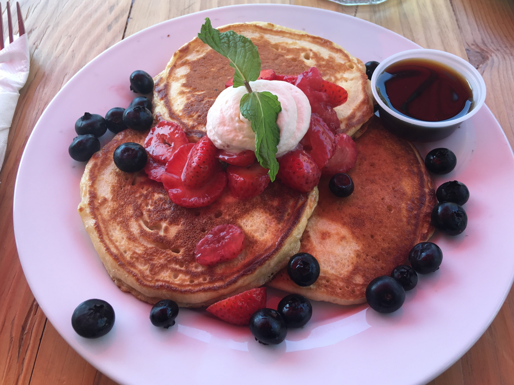

Pancakes

Description
These pancakes are delicious. Fluffy, just the right amount of sweetness, and so incredibly moist. You and your family are sure to love these!
Ingredients
- 1 ½ cups all-purpose flour
- 2 ½ teaspoons aluminum-free baking powder
- ½ teaspoon salt
- 1 tablespoon sugar
- 1 ¼ cups milk, any
- 1 egg
- 3 tablespoons butter, melted
- 2 teaspoons vanilla extract, optional
Steps
- In a large bowl, sift together the flour, baking powder, salt, and sugar. Make a well in the middle and pour in the milk, egg, butter, and vanilla extract (if using it to add flavor). Break up the egg first with a fork, and then begin to combine the flour, working from the outside of the bowl in, until just combined and mostly smooth.
- Heat a non-stick griddle or large pan over medium-high heat. Once hot, grease, spray, or melt butter on the hot surface. When using an electric griddle, heat it somewhere between 300 and 350F.
- Immediately, pour ¼ cup of pancake batter onto the greased pan. Cook the pancakes for about 2 minutes, until the edges begin to look defined and bubbles form. Flip the pancakes over and cook for another minute on the other side. Avoid pressing down on the pancake after flipping; this will cause denser and chewy pancakes and undercooked batter as it oozes out on the sides. Remove the pancakes from the pan onto a plate and keep them warm while you cook the rest of the batter.
- Plate a few pancakes on a plate, top with your favorite toppings and syrups.
- Enjoy!
Home